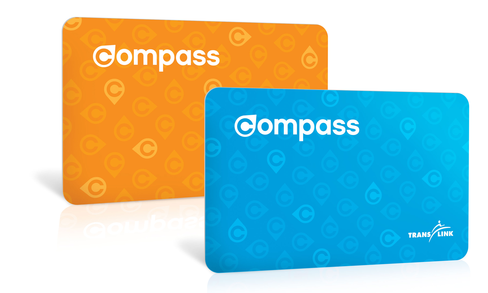

Arriving Vancouver
When you get to Vancouver, lots of things must be done, but first, you need to get to the city! The video below shows how to use the transit system to get from YVR Airport to Downtown Vancovuer. It also provides other tips and tricks. Check it out:
Opening a bank account
For a student is very important to obtain a bank account and a credit card to start building up your credit history. After investigating in a couple of websites it seems that the best option for an student to not pay any fees and still be able to obtain a reliable and secure Bank is going to be

You can find more details on how to obtain this card and what are the benefits you can choose by clicking here
Getting your BC Services Card and BCID
Why should you get a BC Services Card and a BCID? well it is simple, you need to have a way to identify yourself and it is better to present a government-issued ID to businesses and service providers that are required to check ID. Identification documents issued by the government are considered the most credible forms of ID. This is because of the security and screening processes used to verify each person’s identity.
The BC Service Card:
In B.C., public health insurance is called the Medical Services Plan – or MSP. It covers the cost of medically-necessary insured doctor services. To obtain MSP and the Services Card please visit this link with more information on how enroll to this benefit and obtain your card. Please be aware that you need have been at least 90 days in BC in order to apply.
The BCID
In B.C., to have an ID is very important to identify yourself as explained before, to obtain your BCID you have to meet the requirements stablished on the ICBC website, you can follow this link.it is very easy and not very expensive
Working: Get your Social Insurance Number(SIN)
If you are a Canadian citizen, a newcomer to Canada, or a temporary resident, you need a Social Insurance Number (SIN) to work in Canada or to receive benefits and services from government programs. A SIN is issued to one person only. It cannot legally be used by anyone else. To obtain more information on how to obtain your SIN, click here
As well don't forget to visit the Finding Jobs section in this website
Transit System
The first thing you need to consider when moving to Vancouver is the fact that if you don’t have a bike, you have a variety of public transportation that you can use, but for all of this you will first need to have a Compass Card
You can get your Compass Card from several places and once you obtain this you will have to know which payment method would be the best for you. You can visit this site.
Vancouver boasts an accessible and convenient public transit system, offering a great way for visitors to see the city. Most of Vancouver’s top attractions are reachable via transit. TransLink is Metro Vancouver’s regional transportation authority, and operates a public transit system made up of a network of buses, the SkyTrain, and the SeaBus, as well as the West Coast Express commuter train service.
The Translink website is a great place to find current schedules, fare information, and trip planning tools to help you get around while in Vancouver. You can also call 604.953.3333 for customer service.